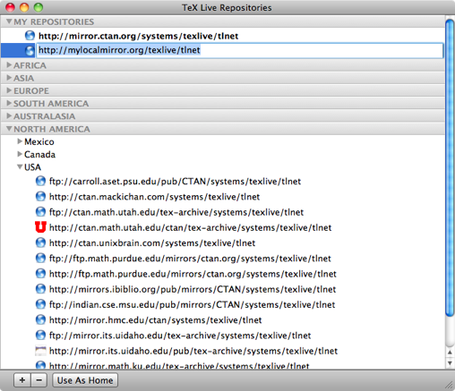
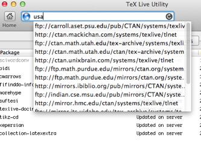

Repositories
TeX Live Utility allows you to easily switch between repositories. In most cases, this will be a Comprehensive TeX Archive Network (CTAN) mirror server, but some users have private repositories or use the TLContrib site for user-contributed packages.
TeX Live Utility comes with a fairly comprehensive list of CTAN mirrors, derived from CTAN.sites. The default repository is shown in bold (but may be hidden under a collapsed outline heading).

Additional repositories can be added by drag-and-drop from a web browser, or by using the "+" button at the bottom of the window and directly editing the URL. These can only be added under the "My Repositories" heading.
Repository URLs can be dragged or copied from the main list for use in other programs or in the TeX Live Utility address field.
The quickest way to enter an address is by typing part of it in the address field: 
You can enter a full name such as "USA" to see all of the mirrors for a given country or continent, or a partial name such as ".edu" to see all university mirrors.
You can also drag-and-drop from a web browser, or drop a .webloc file on the address field.
You can change the "Home" repository using the button at the bottom of the window, by using the Configure menu, or by right- or control-clicking on one of the repositories.
The default repository is mirror.ctan.org, which automatically picks a nearby server for you, in order to spread the load out among multiple sites. This is generally the best choice for a default, and you are strongly encouraged to use it.
Note that you cannot edit or remove the repositories included with TeX Live Utility, and the list will be updated with each release of the program.